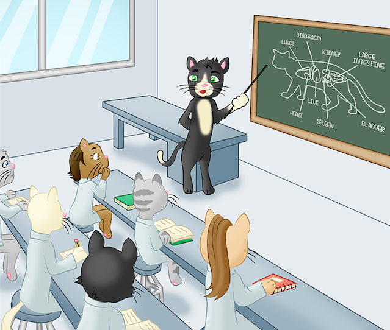

Learn about your Feline Heritage
What is a cat?
Binomial name (scientific name): Felis Catus
In Latin, bi means two or both, and nomen means name. All animals have a scientific Latin name with two parts to it.
Sometimes cats are also called felines and this comes from its Latin name felis.
